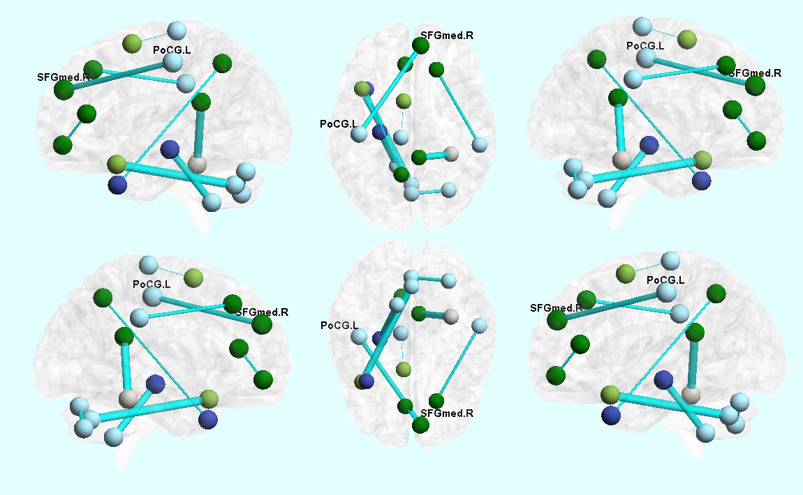

脑科学 Brain Science¶
脑科学旨在探索人类大脑中产生情感、思想、意识的各种脑区结构和功能，利用目前的各种成像技术及电生理信号在各个层面建立脑网络高阶连接的拓扑结构，为人类的行为和心理活动提供可解释性，从而更好的控制脑发育和衰老的过程，预防各项神经性的脑部疾病，提高人类的生活品质。在该方向中，本实验室主要探索脑网络的建模、脑疾病的诊断及情感计算等研究方向。
1.脑网络建模¶
1.1.高阶脑网络¶
由静息态功能核磁共振成像技术估测得到的脑功能连接网络已经成为神经退化疾病诊断中的重要方法。然而，传统的功能连接网络仅仅考虑了大脑区域之间的相关性，对时间具有较高的敏感性。针对这个问题，我们提出一种高阶功能连接相关性提取方法，可以建模不同脑区对之间低阶相关性的相互作用，通过各脑区之间关联在时间上的相关性来对脑功能连接网络进行鲁棒表示。图1 给出了正常人和轻度认知障碍患者在低阶功能连接网络和高阶功能连接网络上的对比。从图中可以看出，高阶功能连接网络能够更好的对不同类型人群进行划分。
图1 正常人和轻度认知障碍患者在低阶功能连接网络和高阶功能连接网络上的对比
1.2.基于脑功能连接网络的小儿自闭症诊断¶
自闭症是一种由于神经系统失调导致的发育障碍，其病征包括不正常的社交能力、沟通能力、兴趣和行为模式。近年来许多研究发现自闭症与脑网络中某些连接的动态特性之间存在一定关联。我们提出了一种小儿自闭症诊断算法，通过Lasso提取脑网络的动态特性，并通过超图结构进行对象关联建模，进一步通过动态超图学习实现自闭症诊断。我们提取出了对自闭症诊断比较重要的脑网络连接，如图2和图3所示，与早期的医学研究发现相一致。
图2 检测获得的时序均值中对诊断相对重要的脑功能连接
图3 检测获得的时序方差中对诊断相对重要的脑功能连接
2.情感计算¶
2.1.图像情绪感知¶
由静息态功能核磁共振成像技术估测得到的脑功能连接网络已经成为神经退化疾病诊断中的重要方法。然而，传统的功能连接网络仅仅考虑了大脑区域之间的相关性，对时间具有较高的敏感性。针对这个问题，我们提出一种高阶功能连接相关性提取方法，可以建模不同脑区对之间低阶相关性的相互作用，通过各脑区之间关联在时间上的相关性来对脑功能连接网络进行鲁棒表示。图4给出了正常人和轻度认知障碍患者在低阶功能连接网络和高阶功能连接网络上的对比。从图中可以看出，高阶功能连接网络能够更好的对不同类型人群进行划分。
旨在消除情绪鸿沟的具有识别度的图像特征已经有了显著的进步，而观众所感知的情绪受到个人和情景因素共同影响，往往是主观个性化的。针对这一问题，我们提出将图像的分类转为离散的概率分布来更好的表征图像所隐含的情感信息，通过优化权重来显式的表达不同特征的重要性。
图4 图像情绪分类结果与目标分布
2.2.生理信号情绪感知¶
在关键领域的核心人工操作中，人员的情绪状态对于任务的完成有着巨大的影响。为了能够实时对人员的情绪状态进行评估，我们通过多模态超图神经网络对多模态生理信号进行建模，将情绪识别任务转化为超图结构中的顶点分类问题。在这种结构中，不同模态生理信号之间以及不同样本（测试者，刺激）之间的复杂关联被有效的建模。我们选取了不同频率段的脑电信号对情绪与脑电之间的相关性进行量化计算，其对比效果（如图5所示）也与已有的生物学的结论相一致。
图5 Valence度量下正例与负例在不同脑区的gamma频段脑电信号的方差对比
传统情绪识别将来自不同测试者的样本在测试集和训练集平等对待，而没有考虑训练集和测试集中来自同一测试者的样本之间是否存在更强的关联，来自不同测试者之间的样本存在个人的生理属性中的差异。在这种情景下，我们将个人的生理和心理特征在超图结构中建模，并且对不同模态的生理信号所揭示的样本间的复杂关联通过中间层融合机制自适应进行融合，从而达到个性化精确情绪感知。图6给出了传统情绪识别与个性化情绪识别的对比。
图6 传统情绪识别和个性化情绪识别的对比
论文列表
|
Junjie Zhu, Yuxuan Wei, Yifan Feng, Xibin
Zhao, Yue Gao |
|
Junjie Zhu , Xibin Zhao , Han Hu , Yue
Gao |
|
Sicheng Zhao, Guiguang Ding, Yue Gao, Xin
Zhao, Youbao Tang, Jungong Han, Hongxun Yao, Qingming Huang |
|
Sicheng Zhao, Amir Gholaminejad, Guiguang
Ding, Yue Gao, Jungong Han, Kurt Keutzer. |
|
Sicheng Zhao, Hongxun Yao, Yue Gao, Guiguang
Ding, Tat-Seng Chua. |
|
Jiayang Guo, Kun Yang, Hongyi Liu, Chunli
Yin, Jing Xiang, Hailong Li, Rongrong Ji, Yue Gao. |
|
Sicheng Zhao, Yue Gao, Guiguang Ding,
Tat-Seng Chua. |
|
Sicheng Zhao, Hongxun Yao, Yue Gao, Rongrong
Ji, Guiguang Ding. |
|
Sicheng Zhao, Guiguang Ding, Yue Gao, Jungong
Han. |
|
Minggxia Liu, Yue Gao, Pew-Thian Yap,
Dinggang Shen. |
|
Jun Zhang, Yue Gao, Yaozong Gao, Brent
Mussell, and Dinggang Shen. |
|
Xiaobo Chen, Han Zhang, Yue Gao, Chong-Yaw
Wee, Gang Li, Dinggang Shen. |
|
Brent C. Munsell, Guorong Wu, Yue Gao,
Nicholas Desisto, Martin Styner. |
|
Yue Gao, Chong-Yaw Wee, Minjeong Kim,
Panteleimon Giannakopoulos, Marie-Louise Montandon, Sven Haller, Dinggang Shen.
|
|
Yue Gao, Ehsan Adeli-M, Minjeong Kim,
Panteleimon Giannakopoulos, Sven Haller, Dinggang Shen. |